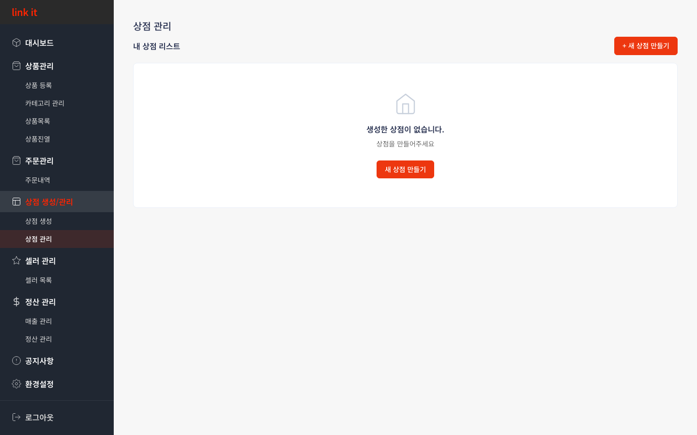
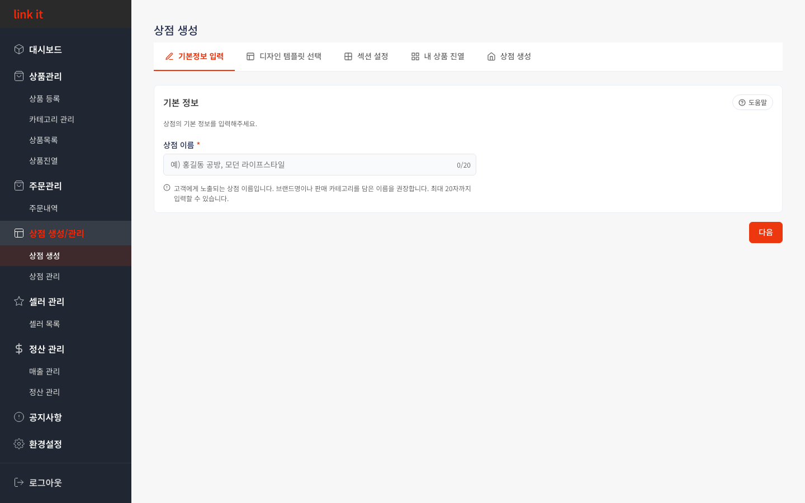
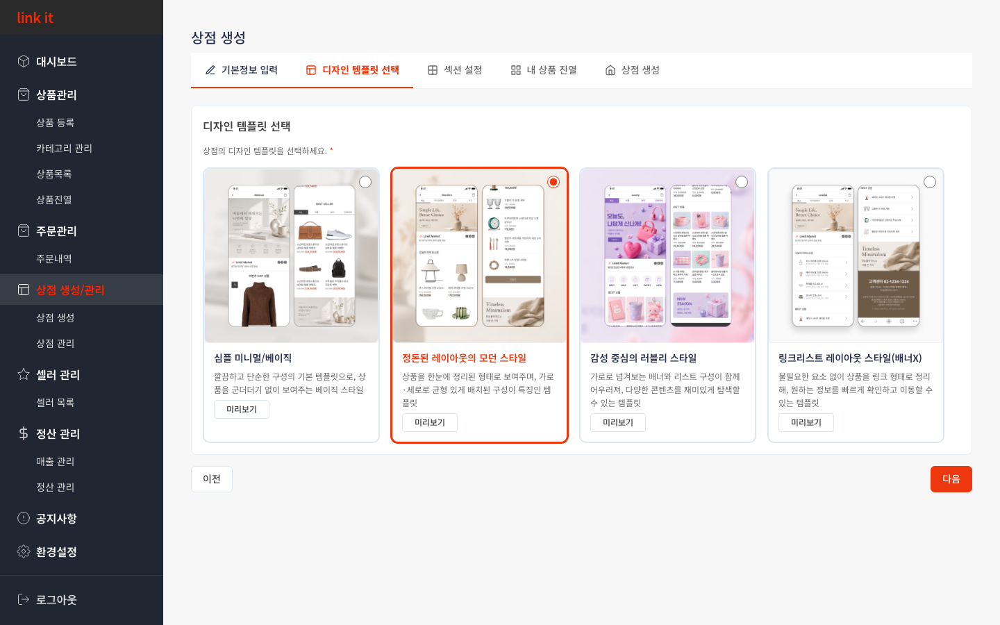
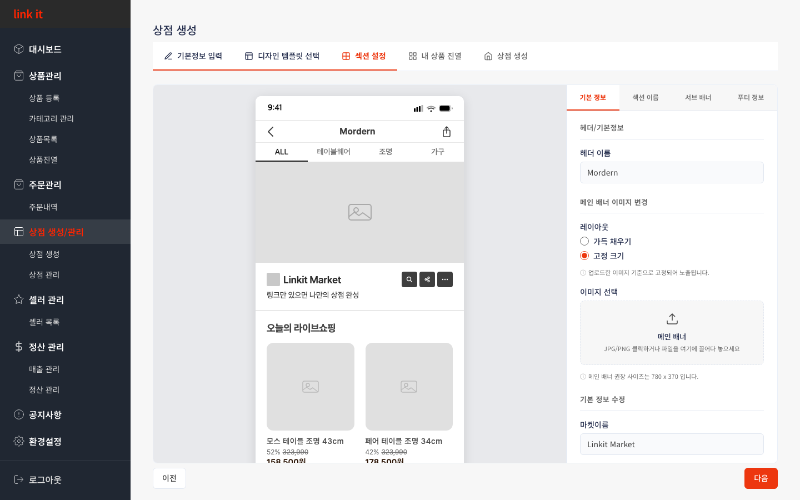
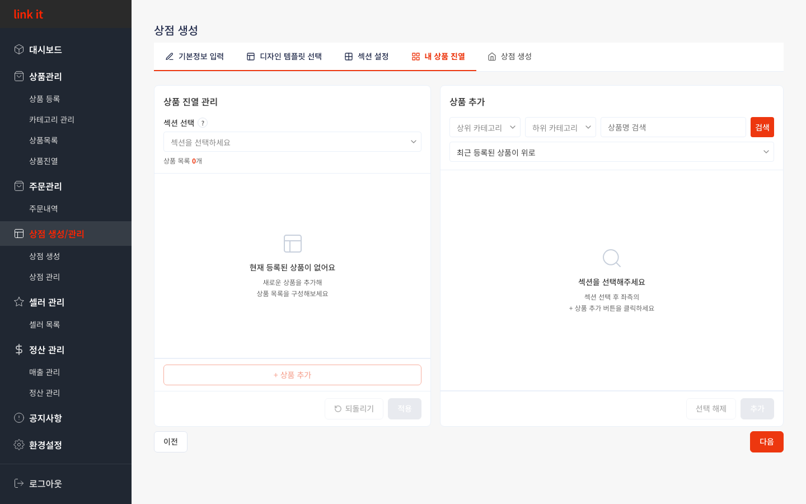
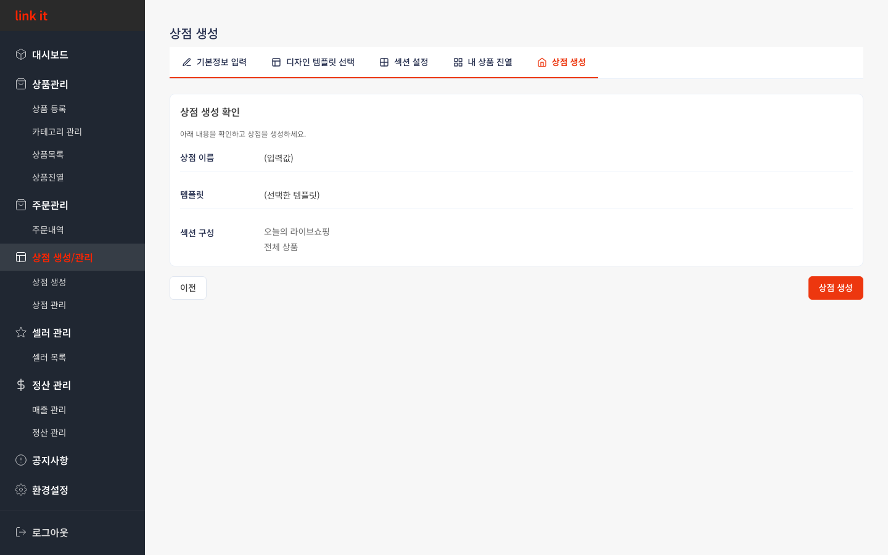

CHAPTER 4
상점 생성/관리
상점 목록 · 5단계 생성 프로세스
4.1
상점 목록 · 신규 상점 생성
생성된 상점이 없으면 빈 화면이 표시됩니다. [+ 새 상점 만들기] 버튼으로 5단계 생성 과정을 시작할 수 있습니다.

1
2
사용 방법
1
[+ 새 상점 만들기]로 생성 시작
상단 오른쪽 [+ 새 상점 만들기] 버튼을 클릭하면 5단계 상점 생성 프로세스가 시작됩니다. 기본정보 입력부터 최종 생성까지 순서대로 진행하세요.
2
빈 화면 [새 상점 만들기] — 동일 기능
아직 상점이 없는 경우 화면 중앙에 빈 상태 안내와 버튼이 표시됩니다. 클릭하면 오른쪽 상단 버튼과 동일하게 상점 생성 과정으로 이동합니다.
3
생성 후 목록에서 편집·관리
상점을 생성하면 이 페이지에 상점 카드가 표시됩니다. 카드에서 상점 이름, 디자인 변경, 섹션 관리 등을 바로 접근할 수 있습니다.
💡 상점 생성은 5단계
입니다. 아래 4.2~4.6 가이드를 참고해 순서대로 진행하세요.
4.2
Step 1 — 기본정보 입력 · 상점 이름 설정
고객에게 노출될 상점 이름을 입력합니다. 최대 20자이며, 나중에 설정 메뉴에서 변경할 수 있습니다.

1
2
3
사용 방법
1
스텝바에서 5단계 흐름 확인
상단 스텝바의 빨간 밑줄이 현재 단계입니다. 기본정보 입력 → 디자인 템플릿 → 섹션 설정 → 상품 진열 → 상점 생성 순서로 진행됩니다.
2
상점 이름 입력 (최대 20자)
입력창을 클릭하고 상점 이름을 타이핑합니다. 오른쪽 카운터로 글자 수를 실시간 확인할 수 있습니다.
3
[다음]으로 Step 2 이동
이름 입력 후 오른쪽 하단 [다음]을 클릭합니다. 이름이 비어 있으면 다음 단계로 넘어갈 수 없습니다.
4.3
Step 2 — 디자인 템플릿 선택 · 상점 레이아웃 결정
4가지 템플릿(심플 미니멀·모던·러블리·링크리스트) 중 상점에 맞는 레이아웃을 선택합니다.

1
2
3
사용 방법
1
카드 클릭으로 템플릿 선택
원하는 템플릿 카드를 클릭하면 빨간 테두리로 선택 표시됩니다. 상품 이미지 위주면 미니멀·모던, 감성 스타일이면 러블리, 링크 목록 형태면 링크리스트를 추천합니다.
2
[미리보기]로 실제 화면 확인
각 카드 하단의 [미리보기] 버튼으로 실제 화면 구성을 팝업으로 확인한 뒤 결정하세요.
3
선택 후 [다음] 클릭
선택이 완료되면 [다음]으로 Step 3(섹션 설정)으로 이동합니다. [이전]으로 돌아와 변경할 수도 있습니다.
4.4
Step 3 — 섹션 설정 · 배너·이름·푸터 콘텐츠 구성
배너 이미지, 헤더 이름, 섹션 이름, 푸터 정보 등 상점을 구성하는 콘텐츠를 설정합니다. 왼쪽 미리보기로 실시간 확인이 가능합니다.

1
2
3
사용 방법
1
오른쪽 탭으로 설정 항목 전환
기본 정보·섹션 이름·서브 배너·푸터 정보 탭을 전환하며 각 영역을 설정합니다.
2
배너 이미지 업로드 (권장 780×370)
이미지 업로드 영역을 클릭하거나 드래그해 배너를 등록합니다. 이미지 없이도 진행 가능하며 나중에 수정할 수 있습니다.
3
왼쪽 미리보기로 실시간 확인
설정 값이 왼쪽 모바일 미리보기에 즉시 반영됩니다. 고객 화면을 확인하며 내용을 다듬으세요.
4.5
Step 4 — 내 상품 진열 · 섹션에 상품 배치
상점 섹션에 판매할 상품을 배치합니다. 왼쪽에서 섹션을 선택하고 오른쪽에서 상품을 검색해 추가하세요.

1
2
3
사용 방법
1
[섹션 선택]으로 진열 섹션 선택
드롭다운에서 섹션을 선택해야 오른쪽 패널이 활성화됩니다.
2
[+ 상품 추가]로 상품 배치
버튼을 누른 뒤 오른쪽에서 상품을 선택하고 [추가]를 클릭합니다. 목록에서 드래그로 순서를 조정하고 [적용]으로 저장하세요.
3
카테고리·이름으로 상품 검색
오른쪽 검색 패널에서 카테고리 필터와 상품명 검색을 활용해 원하는 상품을 빠르게 찾을 수 있습니다.
4.6
Step 5 — 최종 확인 후 상점 생성 완료
지금까지 입력한 상점 이름·템플릿·섹션 구성을 최종 확인하고 [상점 생성] 버튼으로 완료합니다.

1
2
3
마무리 방법
1
상점 이름·템플릿 확인
입력한 상점 이름과 선택한 디자인 템플릿이 올바른지 확인합니다. 수정이 필요하면 [이전]으로 돌아가세요.
2
섹션 구성 확인
설정된 섹션 목록이 표시됩니다. 빠진 섹션이 없는지 체크하세요.
3
[상점 생성]으로 완료
모두 확인했으면 [상점 생성]을 클릭합니다. 완료 후 상점이 활성화되며 상점 관리 페이지에서 확인할 수 있습니다.
✅ 생성 후에도 수정 가능합니다.
상점 이름·배너·섹션 구성·상품 진열은 상점 관리 메뉴에서 언제든지 수정할 수 있습니다.
←
이전 챕터
3. 주문관리
CHAPTER 4 / 8
다음 챕터
5. 셀러 관리
→